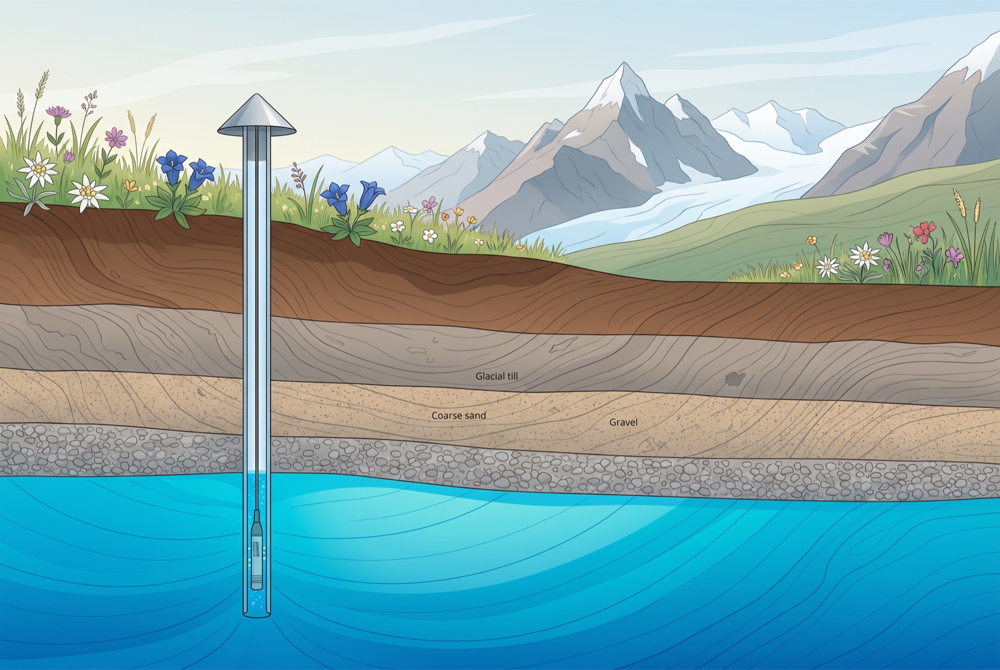
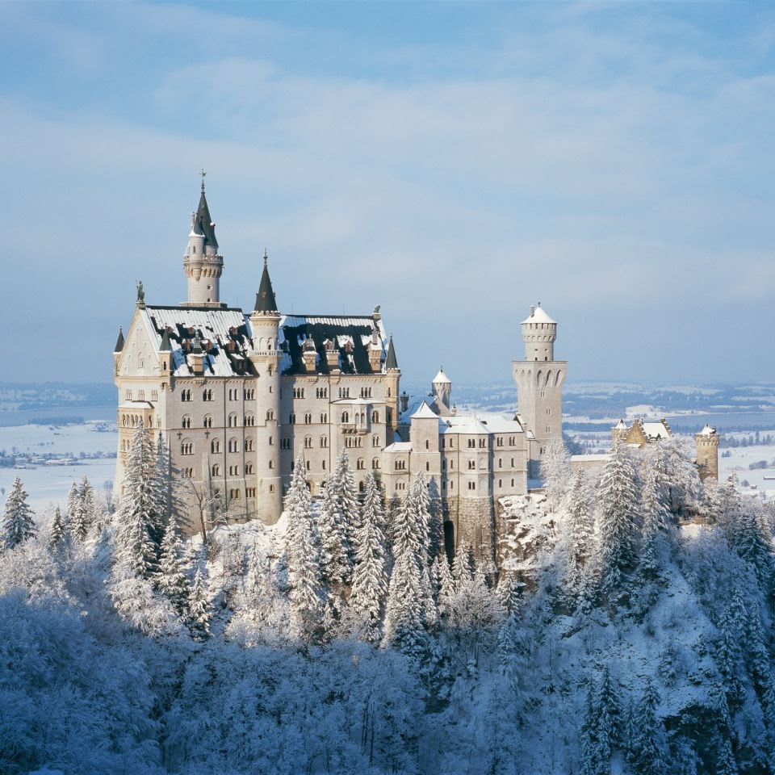
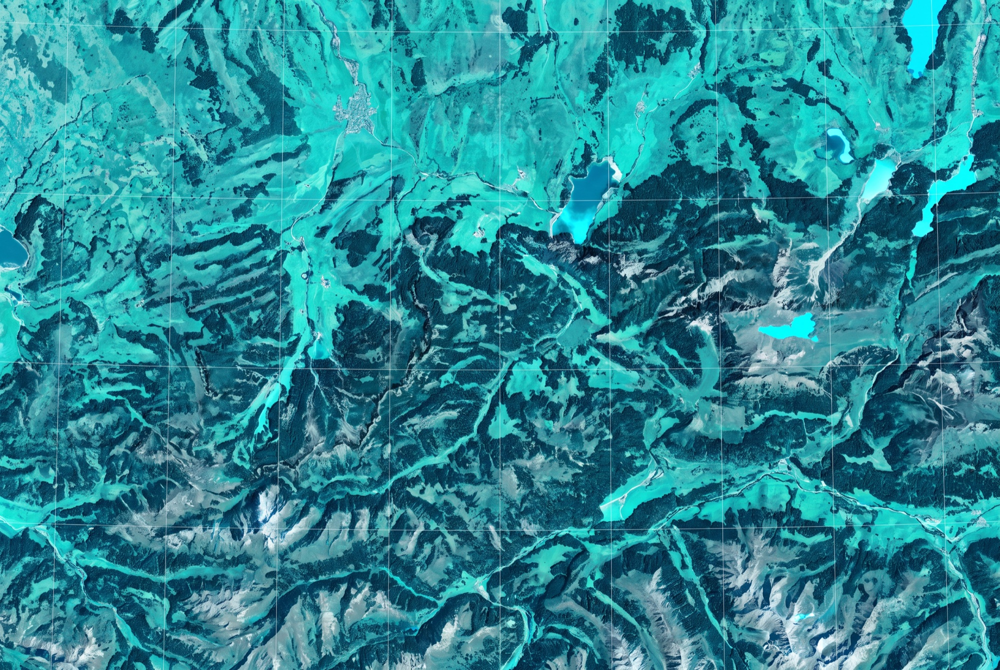
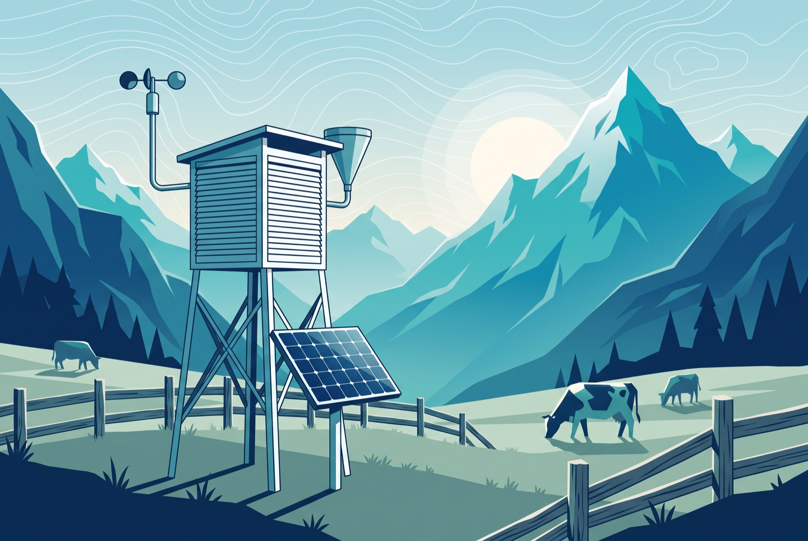

Right now
Live data · Open-Meteo (DWD model) & CAMS air quality · updated —
Loading live data…
Weather: Open-Meteo (DWD ICON model for current conditions; the 14-day forecast averages DWD ICON, ECMWF IFS and NOAA GFS). Air quality: CAMS Europe via Open-Meteo. Values are model/grid data for the selected town, not a single station reading.
Next 14 days
Live forecast for Kempten · average of three models (DWD ICON · ECMWF IFS · NOAA GFS) · click a day for details
Daily values are the mean of three independent forecast models — DWD ICON (Germany), ECMWF IFS (Europe) and NOAA GFS (USA) — via Open-Meteo. Beyond each model's horizon the average continues with the remaining models; the second week is inherently less certain.
Lakes & water
Live water temperatures and levels from the Bavarian Hydrological Service (GKD), 15-minute values
Loading lake data…
Iller river gauges
Loading river data…

Groundwater
Groundwater levels are among the most important — and least visible — environmental indicators in the Alpine foreland. Dry winters and shrinking snowpack show up here years later. The platform will track LfU monitoring wells across the region and make long trends explorable.
Live webcams
Current views across the Allgäu · refreshed — · images: Foto-Webcam.eu

Every season, on record
The webcams don't just show the current weather — their operators archive every frame. Combined with the measurements we record, each season leaves a complete picture: first snow on the peaks, ice on the lakes, the first warm day at the Forggensee.
Webcam images courtesy of Foto-Webcam.eu, who permit free embedding with attribution. Each image links to its full-resolution archive page, where hourly and daily time-lapses are available.
Long-term trends
Why the archive matters
Single days tell you whether to pack a swimsuit. Decades tell you what's happening to the region.
This platform continuously records every measurement it displays. Over the coming years that becomes the most comprehensive open dataset of environmental conditions in the Allgäu — cleaned, unified across sources, and free to download for research, journalism and education.
- Annual mean temperature shift vs. 1961–1990 baseline
- Lake warming and earlier stratification
- Groundwater level trends after low-snow winters
- Vegetation (NDVI) and snow-cover change from satellite imagery

Loading the temperature record…
Real measurements, not a demo: ERA5 reanalysis on a 0.25° grid, backfilled from 1940 by the project's own ingestion pipeline and extended every month. The record follows the location selected under Now.
Sources & approach
Everything on this page comes from public, official data
Weather & climate
DWD Open Data · DWD Climate Data Center · Open-Meteo
Lakes & groundwater
Bavarian Hydrological Service (GKD) · LfU Bayern
Air quality
Umweltbundesamt · LfU Bayern · CAMS Europe
Webcams
Foto-Webcam.eu network (embedded with attribution)
Fires & vegetation
NASA FIRMS · Copernicus Sentinel-2 · Copernicus Land

How it works
- Collect — scheduled jobs pull from public APIs and open-data portals
- Store — every reading lands in a time-series archive
- Present — current conditions for everyone, depth and downloads for researchers
Photos: Wikimedia Commons, CC0 (see images/free/ATTRIBUTION.txt).
Section illustrations: AI-generated for this project.